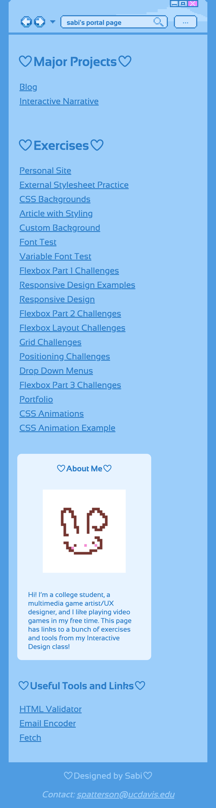

Portal Page Design & Dev.
Challenge: Design a portal page to organize HTML/CSS projects and exercises with a dynamic and personalized header.
Solution: Design a site that's easy to navigate and has the nostalgic-feel I like.
Desktop Version

Mobile Version
